Projets réalisés
Vous trouverez ci-dessous les projets
les plus complets réalisés
dans un cadre
scolaire mais aussi personnel

PROJET #1
Interface Homme-Machine (client lourd)
En fin de cursus de mon Brevet de Technicien Supérieur en Systèmes Numériques,
j'ai eu l'opportunité de concevoir une Interface Homme-Machine (IHM) basée sur du language C grâce à
la bibliothèque de fonctions (toolkit) XForms
dans le cadre de l'épreuve E6-2 spécifique au programme scolaire. L'objectif était de répondre à
un besoin d'assistance et d'automatisation des productions de jus de pommes d'une association
située en Bretagne, venant en aide à ses diverses associations partenaires grâce à une demande de
production croissante.
Cette IHM se présente sous 4 interfaces permettant au bénévole de superviser la production avec un
délai de 30 secondes.
Des trames de données générées par un bouchon de simulation que nous interceptons via des fonctions
associées,
nous a permis de simuler graphiquement l'état de cette production de jus ainsi que le nombre de
bouteilles remplies.
Interface principale
En premier, il est selon moi important de définir notre interface avec des termes simples, qu'il faudra ensuite bien respecter. J'ai donc choisi "ergonomie" pour les gros pouces, les maladroites et maldroits qui n'ont pas de temps à perdre, simplicité et universalité parce que les utilisateurs peuvent être de tout âge.
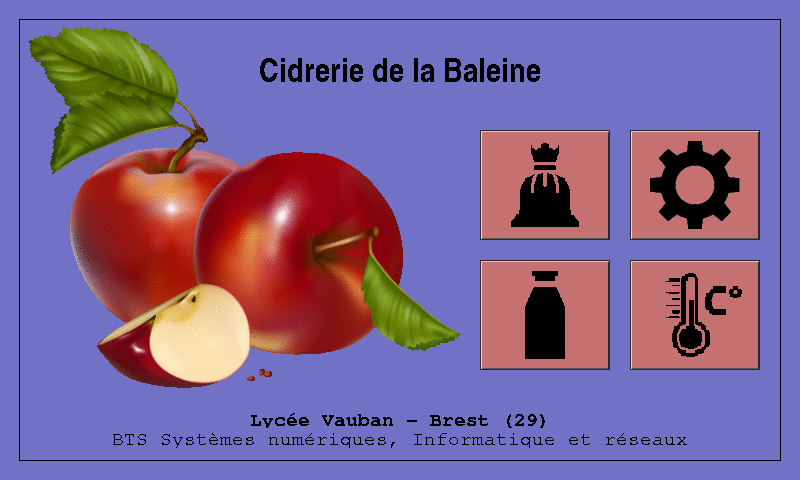
Cette interface principale rappele effectivement les interfaces que l'on retrouve sur beaucoup de voitures de nos jours. Son design aéré ainsi que ses 4 petites images de type pixmap (à l'extension ".xpm") permet à l'utilisateur de comprendre immédiatement ce vers quoi ces boutons peuvent le rediriger.
Interface de déclaration d'une récolte
Quoi de mieux qu'une interface pour simplifier l'étape de récolte, autrefois pénibles et parfois désordonnéees.
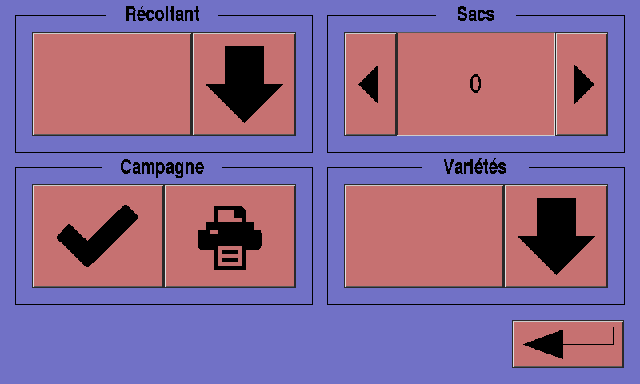
Afin de pouvoir établir des statistiques post-production, il faut permettre à chaque bénévole de pouvoir s'"identifier", de déclarer précisement le nombre de sacs qu'il a pu remplir, si possible en indiquant les variétés récoltées mais également de pouvoir identifier de façon originale la récolte qu'il a effectué par le biais d'une étiquette. Cette étiquette est générée grâce au données récuperées en BDD puis imprimée au clique du bouton présentant l'image d'imprimante.
Interface de déclaration d'une récolte
Retournons dès à present à l'interface d'accueil puis allons directement à l'interface d'administration de cette production de jus de pommes.
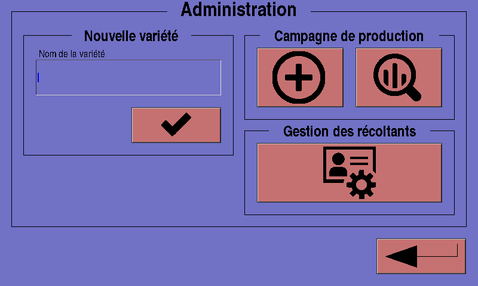
Cette deuxième interface est plus complexe que la précédente car elle contient des boutons permettant d'accéder à diverses interfaces secondaires. On y découvre notamment la possibilité d'inscrire une nouvelle variété de pomme en base de données (BDD), démarrer une nouvelle campagne de production (période de quelques jours durant laquelle l'objectif est de produire une caisse de 12 bouteilles de jus de pommes) ainsi que de gérer les utilisateurs (ajout, modification ou suppression de bénévoles récoltants).
Interface de création d'une campagne
Lorsqu'une caisse contient 12 bouteilles, l'association signe la fin de la campagne associée.
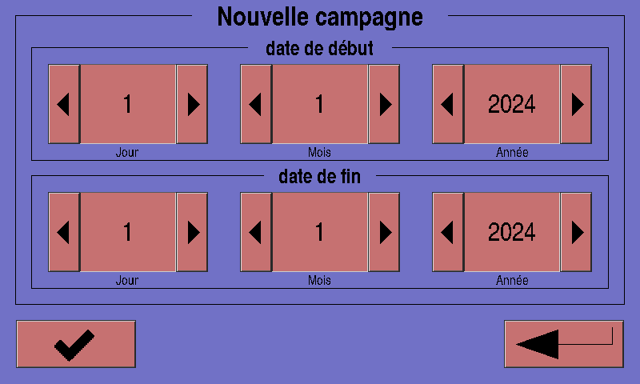
Ici, il est visiblement possible de sélectionner une date de début. Une campagne de production de jus de pommes est répartie sur 3 jours. La date de fin est automatiquement incrémentée grâce à une fonction dédiée. Le weekend laisse place à la vente du jus produis du mercredi au vendredi.
Interface de statistiques de production
Comme énoncé en amont, il peut être utile pour l'association d'avoir un aperçu des statistiques de productions nottament pour le patron de cette association qui souhaite obtenir plus d'informations concernant cette production.
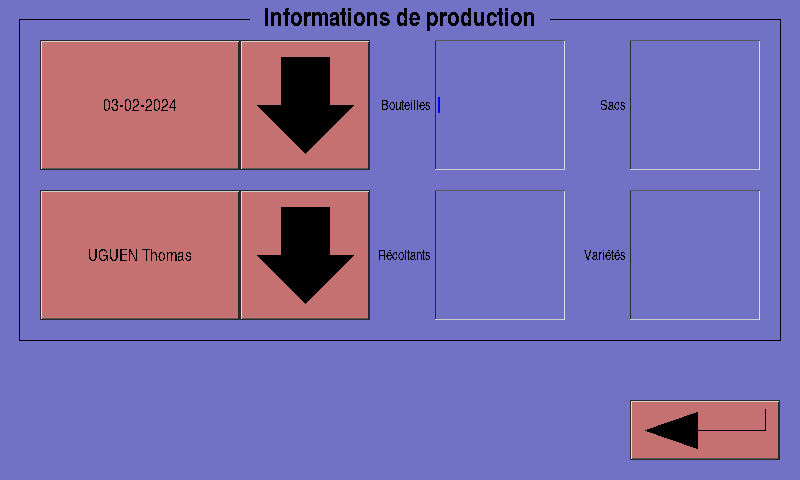
Après avoir séléctionné l'utilisateur qui l'intéresse, le patron constate le nombre de bouteilles qui ont été remplies (avant pasteurisation), le nombre de sacs déclarés dans l'interface de déclaration de récoltes ainsi que le nombre de variétés récoltées que ce dernier à déclaré à l'IHM à la date affichée automatiquement.
Interface de gestion des récoltants
Imaginons miantenant que l'administrateur ou le patron de cette association veuille ajouter ou supprimer un récoltant. Et bien il peut tout à fait de faire grâce à cette simple interface de gestion des récoltants.
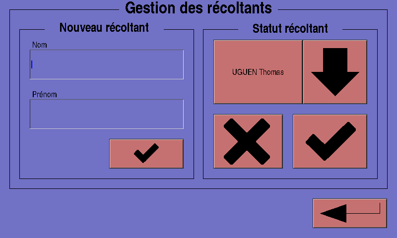
Après avoir séléctionné l'utilisateur qui l'intéresse, le patron constate le nombre de bouteilles qui ont été remplies (avant pasteurisation), le nombre de sacs déclarés dans l'interface de déclaration de récoltes ainsi que le nombre de variétés récoltées que ce dernier à déclaré sur l'IHM à la date affichée automatiquement.
Interface de visualisation du remplissage
Pour accompagner les remplisseurs lors du remplissage des bouteilles, j'ai développé cette interface de remplissage pour indiquer le nombre de bouteilles remplies (envoi des trames du bouchon de simulation reglé à 30 secondes d'intervalle lors des tests d'intégration)
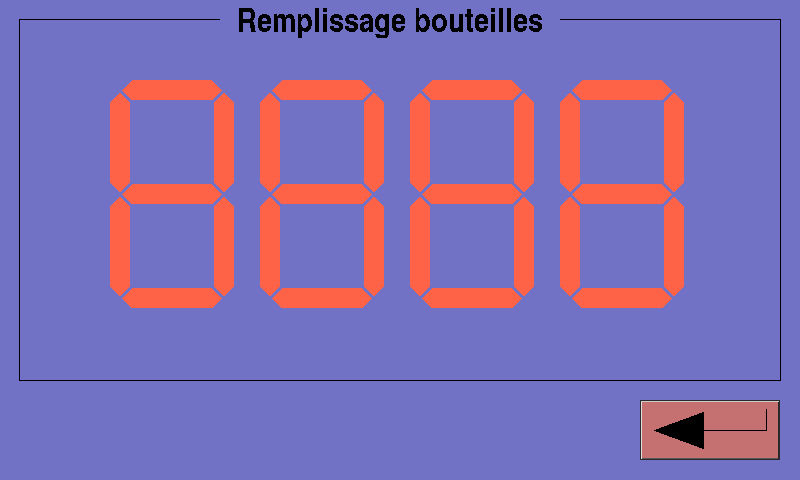
Cette image à été capturée lors de la phase des tests unitaires. Ici, l'interface renvoi le nombre de bouteilles sur un afficheur 7 segments également réalisé avec le toolkit XForms, très utile pour donner une cadence et motiver nos chers bénévoles !
Interface de visualisation de la pasteurisation
Enfin, pour faciliter et assister le pasteuriseur dans ses missions autrefois penibles voire denagereuses, j'ai conçu cette petite interface avec des cadrans progressifs pour indiquer la montée de la température.
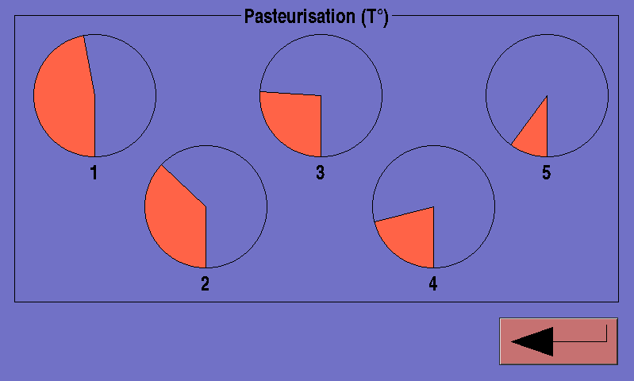
Pour contrôler la température de chaque bain-marie, l'association avait équipé les récipients avec de simples thérmomètres qu'ils devaient attraper pour pouvoir regarder la température. aujourd’hui, ces bain-maries sont équipés de capteurs integrés, dorénavent reliés à l'ordinateur (Raspberry Pi 3B+) affichant notre IHM. Ces cadrans numérotés de 1 à 5 progressent à mesure que la température grimpe (jusqu'à environ 75°C).
Envie d'en savoir plus ?
PROJET #2
Identité visuelle pour une entreprise fictive
Au cours de ma Licence Professionelle des Métiers du Numérique CRRW (Conception, Rédaction et Réalisation Web), j'ai pu travailler sur des petits projets dont la création de cette entreprise fictive.
Le logo, symbole intemporel d'une marque
Dans un premier temps, j'ai réfléchis aux principales valeurs qu'une entreprise aussi professionnelles et polyvalente que Le Studio Numérique pouvait refleter. A l'issu de cette reflexion, j'en ai déduis que le logotype devait incarner simplicité et convivilité en l'accompagnant d'une petite mascotte.
Le bleu, souvent associé à la confiance, la sécurité et le professionnalisme, évoque un sentiment de calme et un lien avec l'innocation et la technologie. Idéal, donc, pour une telle entreprise. Le blanc, lui, est universel et symbole la pureté, la simplicité. Dans notre logotype, il permet de créer un contraste avec le bleu ce qui rend le design plus lisible.
Déclinaison principale de Le Studio Numérique
Plus qu'une déclinaison, Numy est la mascotte de cette entreprise.
Au delà d'une simple représentation, elle donne effectivement une impression de convivialité et rappoche le client à l'entreprise. Par définition, une mascotte aide à créer un lien émotionnel avec le public. En humanisant la marque, elle rend l'entreprise plus accessible et sympathique et c'est de là que Le Studio Numérique se démarque.
Simple et efficace : la carte de visite
Pour se faire connaître, cette carte de visite au design simple et efficace permet au client bénéficiaire d'identifier les infomations importantes d'où ce contraste entre les deux couleurs de Le Studio Numérique. le bleu permet justement de faire resortir toutes ces informations.
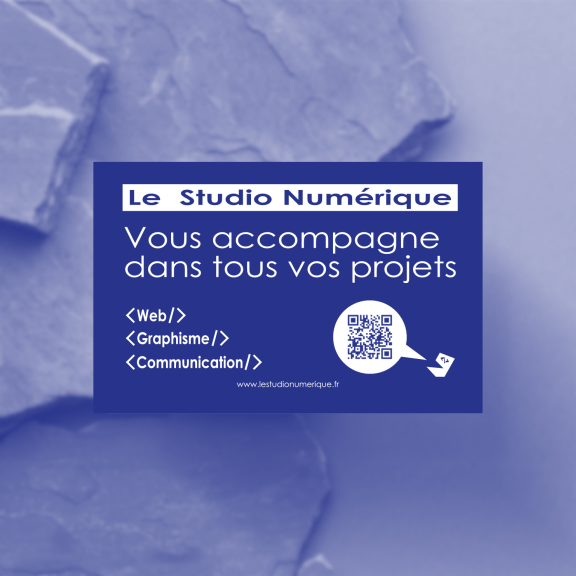
Les balises fermantes utilisées en guise de liste des domaines sur lesquels l'entreprise travaille font références aux balises utilisées en HTML. Le message inscrit en grand a pour but de retenir l'attention du lecteur tout comme le QR Code apposé en bas de la carte qui, lorsqu'il est capturé par un appareil photo, redirige l'utilisateur vers le site Internet. Si ce dernier ne parvient pas à capturer ce QR Code il peut se rendre à l'adresse indiquée juste en dessous.
L'offre promotionnelle qu'il ne fallait pas rater
Pour faire profiter ses clients, celles et ceux interessés, Le Studio Numérique propose à l'occasion des fêtes de fin d'année le pack Numy. Une offre qui fait sourire notre chère mascotte !
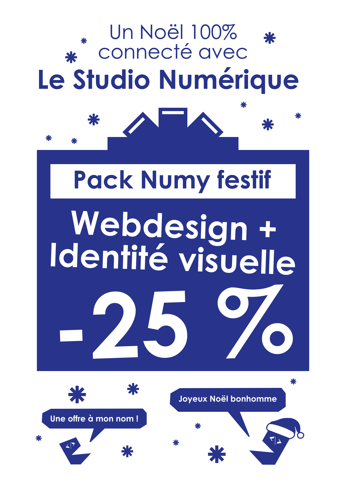
Et qui fera très certainement sourire les adhérents ! Une réduction de 25% sur le webdesign du site internet et l'identité visuelle de l'entreprise du client.
Plus de détails ?
PROJET #3
Identité visuelle pour Délices de Burgers
Dans un cadre plus personnel, j'ai pu me concentrer sur quelques projets de petites tailles dont la création de quelques fragments d'identités visuelles pour cette entreprise fictive.
Un logo qui croque l'audace à pleines dents
Orange et jaune. Des couleurs évoquent des émotions et des perceptions positives qui peuvent influencer l'expérience des clients de manière subtile mais puissante. Chez Délices de Burgers, l'objectif est de faire profiter aux clients la meilleure expérience culinaire possible.
Ce logotype à la fois enfantin et rigolo illustre le cercle familial mais aussi amical, la mobilité de la jeunesse et la restauration rapide.
La carte qui titille l'appétit
Il faut évidemment ajouter à ce logotype une certaine visibilité, de quoi bien se vendre et attirer petits et grands, tel que suggère la devise de cette enseigne.
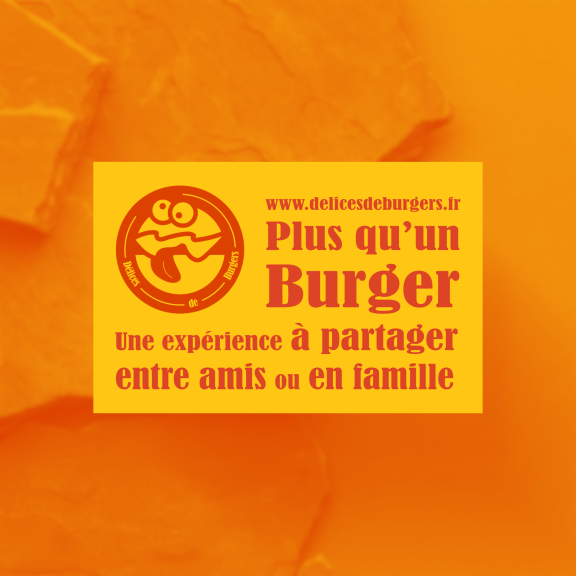
Son design clair et raffiné, ainsi que le contraste des couleurs arborants le logotype de Délices de Burgers permet de repérer et de marquer les esprits rapidemment.
Un halloween à partager entre amis ou en famille
A l'occasion de la célèbre fête irlandaise qu'on connais tous, Délices de Burgers s'est investi pour régaler ses clients avec ses nombreuses vaiétés de burgers.
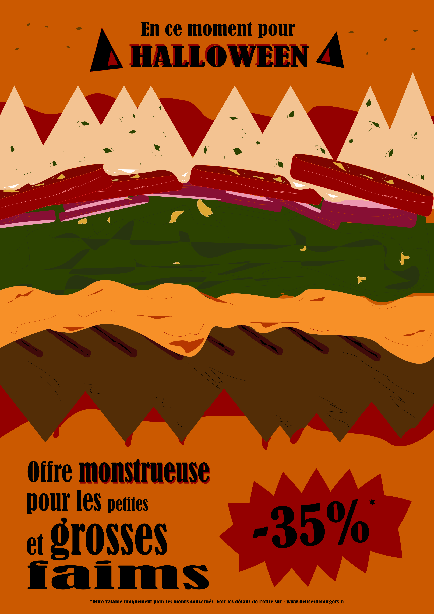
Délices de Burgers prépare de savoureux burgers dont les ingrédients sont issus d'une production locale de qualité. C'est un restaurant qui offre à ses clients une expérience innoubliable de par ses incroyables burgers en plus d'être accompagnés et conseillés par un personnel à l'écoute des besoins de chaque client.
Intéressante cette affiche, non ?
Mon profil vous intéresse ?